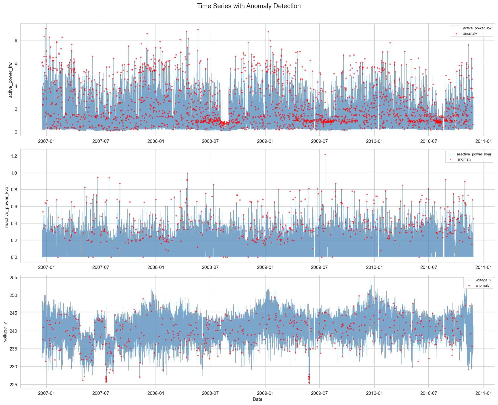
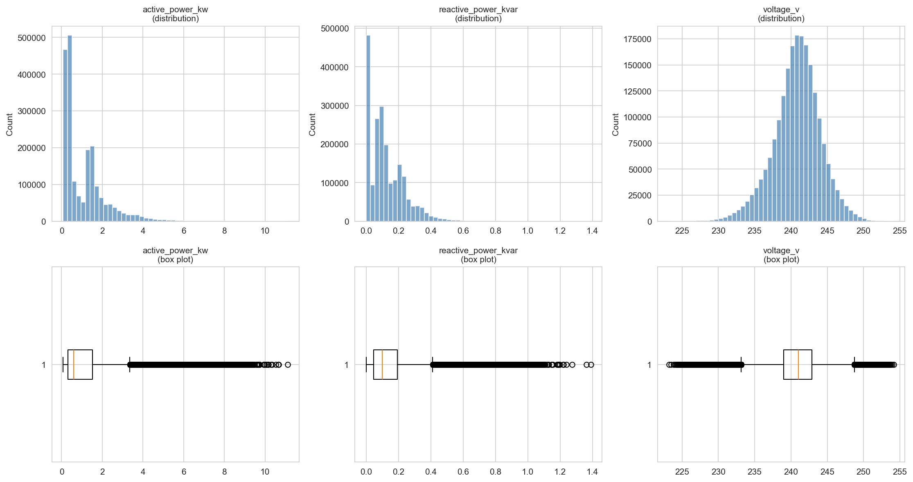
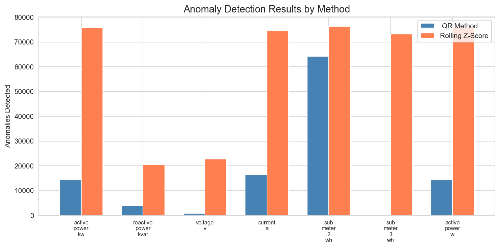
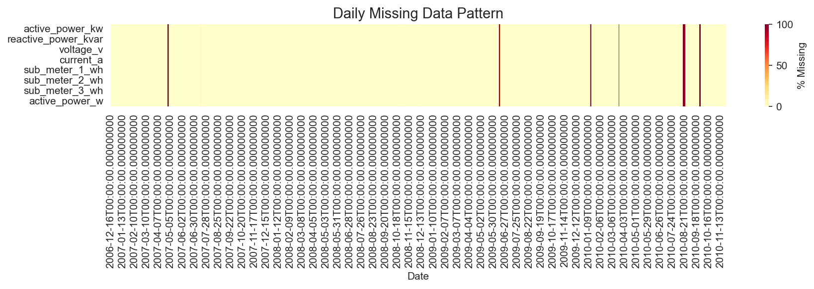

Cleans 2M+ rows of household electric power consumption data with missing value interpolation, dual-method anomaly detection, and unit standardization.
Semicolon-delimited, mixed formats, ? as NA
Interpolation, forward/back fill, flagging
kW, V, A, Wh + derived columns
IQR + Rolling Z-Score (dual method)
Distributions, time series, heatmaps
| Column | Missing | % Missing | Method | Remaining |
|---|---|---|---|---|
| active_power_kw | 25,979 | 1.25% | Linear interpolation | 25,747 |
| reactive_power_kvar | 25,979 | 1.25% | Linear interpolation | 25,747 |
| voltage_v | 25,979 | 1.25% | Linear interpolation | 25,747 |
| current_a | 25,979 | 1.25% | Linear interpolation | 25,747 |
| sub_meter_1_wh | 25,979 | 1.25% | Linear interpolation | 25,747 |
| sub_meter_2_wh | 25,979 | 1.25% | Linear interpolation | 25,747 |
| sub_meter_3_wh | 25,979 | 1.25% | Linear interpolation | 25,747 |
| Measurement | IQR Anomalies | Rolling Z-Score | Total | % |
|---|---|---|---|---|
| active_power_kw | 14,306 | 75,698 | 87,289 | 4.21% |
| reactive_power_kvar | 3,886 | 20,440 | 22,982 | 1.11% |
| voltage_v | 810 | 22,838 | 23,565 | 1.14% |
| current_a | 16,523 | 74,582 | 87,796 | 4.23% |
| sub_meter_2_wh | 64,414 | 76,247 | 130,758 | 6.30% |
| sub_meter_3_wh | 0 | 73,246 | 73,246 | 3.53% |
Red dots indicate anomalies detected by IQR or rolling z-score methods. Shows active power, reactive power, and voltage over 4 years.

Histograms and box plots showing the distribution of key power measurements after cleaning.

Comparison of IQR vs rolling z-score detection across all measurement columns.

Daily missing data patterns across all sensor columns over the full date range.
